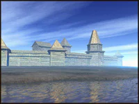
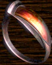
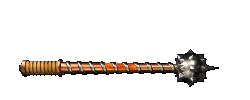
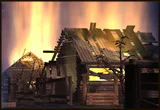
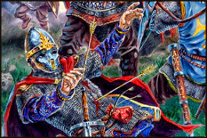

| ! Локальная версия Web сайта от 10 октября ! | Ссылка на действующий web-сайт(www.snowball.ru) |
|---|
|
|
| Со дня Исхода Всеслав Чародей охраняет Турим Ваал, Огненный Клинок клана Северного Острова. Своим домом Всеслав выбрал долину древнерусского города Дедославля и уже несколько столетий служит верой и правдой роду князя Всеволода. |
| . |
 |
| . |
| Вход в пещеру, в которой заключен
Огненный Клинок, закрыт гигантским камнем и
защищен потоком огненной лавы. Единственный
способ добраться до меча -- использовать Кольцо
Лавы, Гор Ваал, которое ненадолго открывает
проход в пещеру. Однажды на охоте отряд пришлых викингов неожиданно атакует князя и его свиту, убивая отца Всеволода. В пылу схватки глава отряда отнимает у князя Кольцо Лавы, после чего викинги в спешке отступают. |
 |
| . |
| Всеслав, обеспокоенный тем, что Кольцо может попасть в руки врага, желающего добраться до Турима, -кузнец Крозз заключал магию в "поющие вещи"-довольно долго преследует уходящий отряд, однако теряет его след в Скандинавии и вынужден вернуться обратно к себе в долину... |
 |
| Игра начинается с того, что
готовый к худшему Всеслав возвращается в долину
Дедославля, чтобы встретить возможного
противника у Хранилища Турим Ваала: неизвестный
герой, пославший викингов за Кольцом Лавы, должен
неизбежно придти в долину и попытаться
заполучить Клинок. Отсутствовавший несколько месяцев Всеслав находит Всеволода под тяжестью внезапно нахлынувших проблем: в лесу, окружающем долину, расположились отряды суровых жителей пограничных территорий -- бродников, изматывающие близлежащие деревни постоянными набегами. |
 |
| Неприятности продолжаются
кровавым рейдом викингов, опустошившим
несколько деревень, расположенных на берегу
реки. В это же время гонец приносит известие о
приближающемся со стороны равнины гигантском
отряде давно не захаживших в эти места половцев. Все пути из долины оказываются перекрытыми, и вся надежда князя ложится на верного воеводу его рода -- Всеслава, прозванного Чародеем за умение выходить невредимым из самых тяжелых битв... |
 |
Текст и
иллюстрации (c) 1997 Snowball Interactive Entertainment, Inc. |